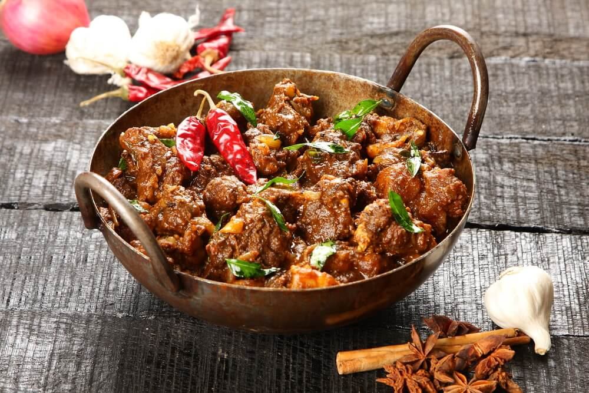
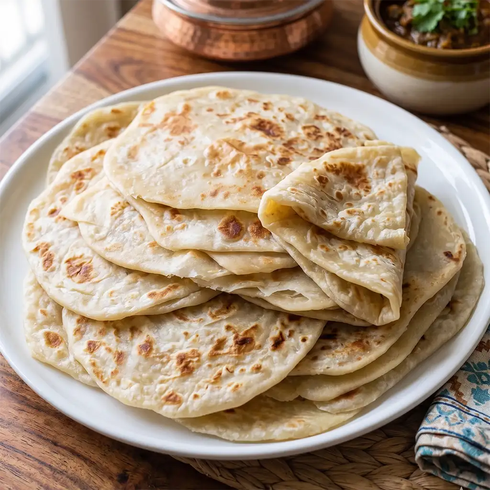
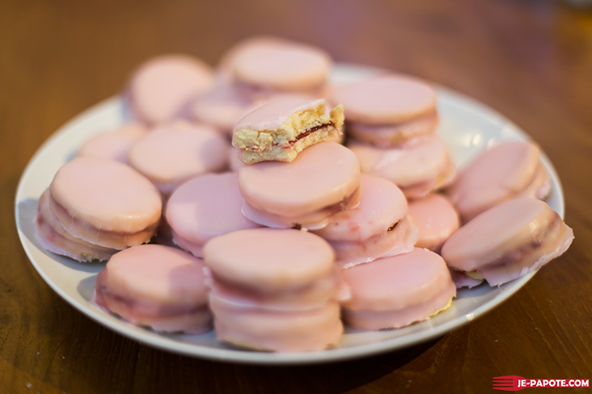

La gastronomie mauricienne est un mélange unique d’influences indiennes, créoles, chinoises et européennes, avec des plats emblématiques comme le roti(ou farata), le dholl puri, le rougaille, le vindaye, le mine frit ou encore le salmi mauricien

Le salmi mauricien est un ragoût de poulet créole, généreux et parfumé composé de viande, oignons, ail, gingembre, coriandre, plusieurs epices(7), tomates, vin rouge et de piments

Le farata(aussi appelé roti) est une galette plate devenue incontournable a l'ile Maurice, il est composé de farine de blé, eau chaude, sel et d'huile végétale

Le napolitaine est une patisserie composé de farine de blé, beurre, sel, lait, confiture de goyave ou fraise, sucre glace et de colorant alimentaire